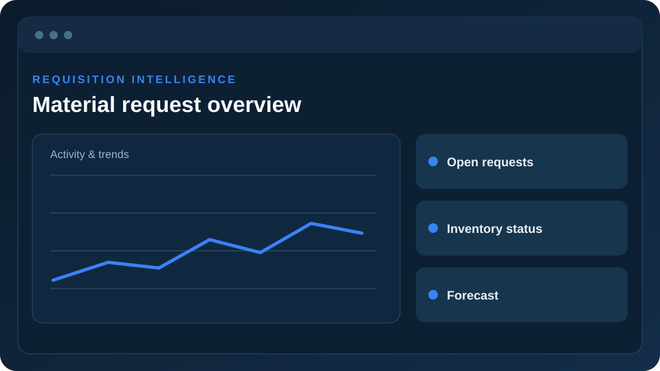
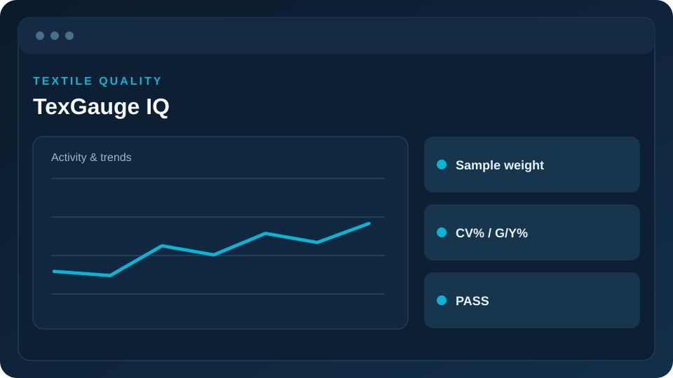
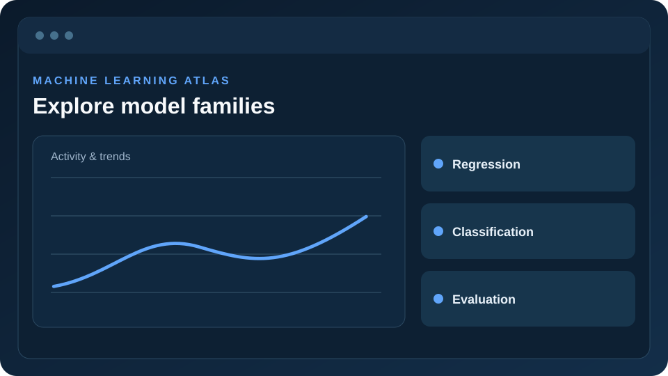

Industrial analytics · In development
MSM Digital Material Requisition Intelligence System
A digital requisition workflow with analytics and decision-support concepts.
View project details →BS MATHEMATICS / DATA / AI / AUTOMATION
I combine mathematics, data, machine learning, and software development to build practical systems for real-world problems.
SELECTED WORK
Industrial workflows, quality monitoring, machine learning education, and forecasting.

A digital requisition workflow with analytics and decision-support concepts.
View project details →
A quality dashboard concept for spinning processes and pass/fail review.
View project details →
A visual learning platform with organized model pages and interactive explanations.
View project details →BACKGROUND
I study Mathematics at Bahauddin Zakariya University and have explored production processes, data quality, forecasting, and digital workflows through industrial work.